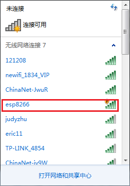
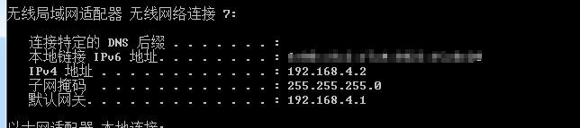
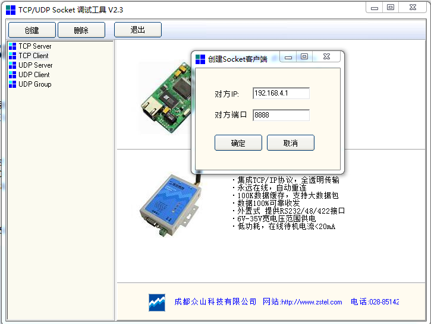
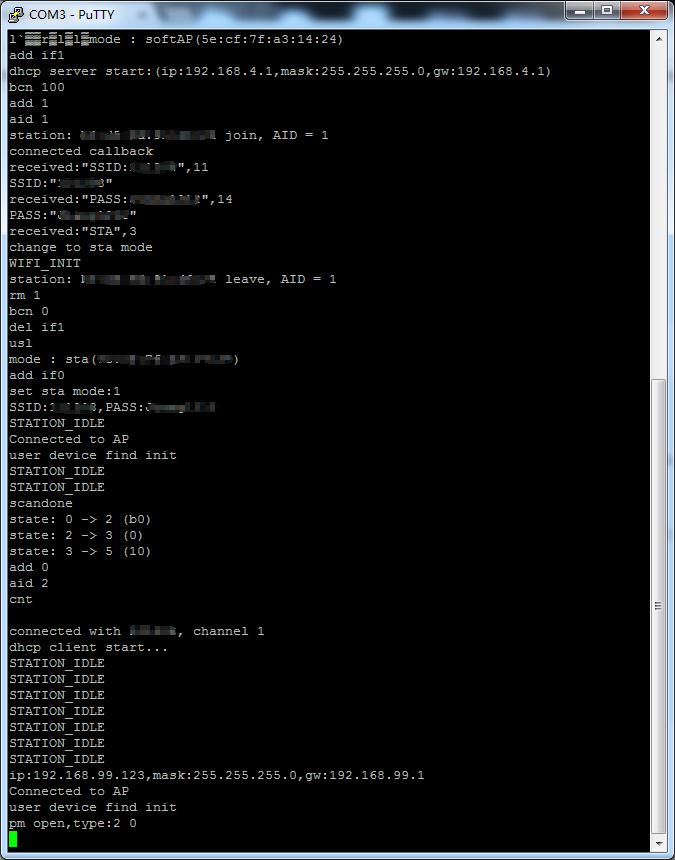

终于开始玩ESP8266了，ESP8266都流行了几年了，现在才玩，有点OUT了，不过，也好，到现在推出了这么多年，也没那么多坑了。
ESP8266是面向物联网的一款WIFI SOC，如果不用WIFI的功能的话，那就跟普通的MCU差不多。因为ESP8266不像电脑跟手机，有显示器跟键盘，所以，用ESP8266最重要的一步是怎么使用 ESP8266 WIFI功能与其他设备相连。ESP8266 SDK给出的是smartconfig（微信Airkiss跟ESP Touch）功能，能够让ESP8266连接路由器，这样其他设备就可以通过局域网或者 互联网跟ESP8266通信了。
这里尝试下其他方法，不用ESP8266 SDK提供的Airkiss跟ESP Touch。
思路是利用ESP8266既可以做station也可以做AP的功能，当ESP8266启动时，读取Flash里面的参数，如果保存有AP的SSID跟PASSWORD，就尝试连接，连接成功，则工作再station模式，如果连接不成功，或者Flash里面没有保存有SSID跟PASSWORD，则进入AP模式， 客户端连接这个进入AP模式的ESP8266，利用TCP/UDP通讯，设置欲连接的AP的SSID跟PASSWORD，设置完后，再让ESP8266进入station模式，这样ESP8266就可以连入网络。
这里使用ESP8266 Non-OS SDK。
1、ESP8266 AP mode
第一步，实现ESP8266 AP mode,这个功能可以直接用ESP8266 SDK API，具体实现如下：
void esp8266_app_soft_ap_init(void)
{
struct softap_config config;
wifi_softap_get_config(&config);
os_memset(config.ssid, 0, 32);
os_memset(config.password, 0, 64);
os_memcpy(config.ssid, "esp8266", 7);
os_memcpy(config.password, "12345678", 8);
config.authmode = AUTH_OPEN;//AUTH_WPA_WPA2_PSK;
config.ssid_len = 0;// or its actual length
config.max_connection = 4; // how many stations can connect to ESP8266 softAP at most.
wifi_softap_set_config(&config);// Set ESP8266 softap config .
}
调用该函数：
void user_init(void)
{
uart_init(BIT_RATE_115200, BIT_RATE_115200);
esp8266_app_soft_ap_init();
}
这里实现了一个SSID为“esp8266",PASSWD为”12345678“，为了减少步骤，config.authmode参数设置为”AUTH_OPEN“，当有设备连接这个AP时，不用输入密码。运行结果如下：

我的电脑搜搜到的AP/路由如下：

用我的电脑连接了这个ESP8266实现的AP后，调试信息及我的电脑的IP地址如下：


从以上的信息可以看出，ESP8266 实现的AP的网关为“192.168.4.1”，我的电脑连接了该AP后的IP地址为“192.168.4.2”
2、TCP服务器
接下来在AP模式下，实现TCP Server，代码如下：
static struct espconn *pTcpServer;
char SSID[15]= "";
char PASS[15]= "";
void Tcp_Server_Recv(void *arg, char *pdata, unsigned short len)
{
uint8_t i=0;
os_printf("received:\"%s\",%d\r\n",pdata,len);
if(pdata[0] == 'S' && pdata[1] == 'S' && pdata[2] == 'I' && pdata[3] == 'D' && pdata[4] ==':')
{
for(i=0;i<len-3;i++)
SSID[i] = pdata[5+i];
os_printf("SSID:\"%s\"\r\n",SSID);
}else if(pdata[0] == 'P' && pdata[1] == 'A' && pdata[2] == 'S' && pdata[3] == 'S' && pdata[4] ==':')
{
for(i=0;i<len-3;i++)
PASS[i] = pdata[5+i];
os_printf("PASS:\"%s\"\r\n",PASS);
}else if(pdata[0] == 'S' && pdata[1] == 'T' && pdata[2] == 'A')
{
os_printf("change to sta mode\r\n");
}
}
void Tcp_Server_Listen(void *arg)
{
struct espconn *pespconn = (struct espconn *)arg;
espconn_regist_recvcb(pespconn, Tcp_Server_Recv); //注册接收监听函数
os_printf("connected callback\r\n");
}
void tcp_server_init(void)
{
espconn_tcp_set_max_con(1); //设置TCP连接的最大多少
pTcpServer = (struct espconn *)os_zalloc(sizeof(struct espconn));
pTcpServer->type = ESPCONN_TCP; //TCP服务
pTcpServer->state = ESPCONN_NONE; //状态
pTcpServer->proto.tcp = (esp_tcp *)os_zalloc(sizeof(esp_tcp));
pTcpServer->proto.tcp->local_port = 8888; //端口号
espconn_regist_connectcb(pTcpServer, Tcp_Server_Listen);
espconn_accept(pTcpServer);
espconn_regist_time(pTcpServer, 180, 0); //设置超时断开时间 单位s
}
函数“tcp_server_init”实现了一个监听端口为“8888”的TCP服务器，注册了一个连接回调函数“Tcp_Server_Listen”，当有客户端连接该服务器时， 调用该函数，该函数注册了一个接收回调函数"Tcp_Server_Recv"，接收到的数据就在这进行处理，这里实现了一个简单的通讯协议，一共有个3命令：
1、第一个是设置AP/路由的SSID命令，格式为“SSID：”+SSID名字，如SSID为“1234”的命令为“SSID：1234”
2、第二个是设置AP/路由的密码命令，格式为“PASS：”+密码，密码为“8888888”的命令为“PASS：88888888”
3、第三个是让ESP8266变为STA模式，并连接指定AP/路由。命令为“STA”
在win7上，连接了该ESP8266实现的AP后，使用TCP/UDP调试助手连接该ESP8266实现的TCP服务器，如下图，设置服务器IP为："192.168.4.1",端口号位：“8888”，

测试通讯协议如下：
从上图可知，ESP8266能够成功获取win7发过来的SSID跟密码，ESP8266获取到了SSID跟密码后，就可以接入网络了，
3、切换Sta模式
在ESP8266成功获取AP/路由的SSID跟密码后，要进入STA模式时，就有个问题，那就是ESP8266支不支持在AP状态下，不重新上电切换成STA模式，如果支持的话，在设置完AP/路由参数后，就可以直接进入STA模式， 不支持的话，就要先把AP/路由的SSID跟密码存储到Flash中，再重新启动，然后进入STA模式。
第一步，先试下不重启能不能进入STA模式，首先，实现进入STA模式的函数，如下：
static ETSTimer WiFiLinker;
WifiCallback wifiCb = NULL;
static uint8_t wifiStatus = STATION_IDLE, lastWifiStatus = STATION_IDLE;
static void ICACHE_FLASH_ATTR sta_check_ip(void *arg)
{
struct ip_info ipConfig;
os_timer_disarm(&WiFiLinker);
wifi_get_ip_info(STATION_IF, &ipConfig);
wifiStatus = wifi_station_get_connect_status();
if (wifiStatus == STATION_GOT_IP && ipConfig.ip.addr != 0)
{
os_timer_setfn(&WiFiLinker, (os_timer_func_t *)wifi_check_ip, NULL);
os_timer_arm(&WiFiLinker, 2000, 0);
}
else
{
if(wifi_station_get_connect_status() == STATION_WRONG_PASSWORD)
{
INFO("STATION_WRONG_PASSWORD\r\n");
wifi_station_connect();
}
else if(wifi_station_get_connect_status() == STATION_NO_AP_FOUND)
{
INFO("STATION_NO_AP_FOUND\r\n");
wifi_station_connect();
}
else if(wifi_station_get_connect_status() == STATION_CONNECT_FAIL)
{
INFO("STATION_CONNECT_FAIL\r\n");
wifi_station_connect();
}
else
{
INFO("STATION_IDLE\r\n");
}
os_timer_setfn(&WiFiLinker, (os_timer_func_t *)wifi_check_ip, NULL);
os_timer_arm(&WiFiLinker, 500, 0);
}
if(wifiStatus != lastWifiStatus){
lastWifiStatus = wifiStatus;
if(wifiCb)
wifiCb(wifiStatus);
}
}
void ICACHE_FLASH_ATTR sta_init(uint8_t* ssid, uint8_t* pass, WifiCallback cb)
{
struct station_config stationConf;
bool is_ok;
INFO("WIFI_INIT\r\n");
is_ok = wifi_set_opmode_current(STATION_MODE);
os_printf("set sta mode:%d\r\n",is_ok);
//wifi_station_set_auto_connect(FALSE);
wifiCb = cb;
os_memset(&stationConf, 0, sizeof(struct station_config));
os_sprintf(stationConf.ssid, "%s", STA_SSID);//ssid);
os_sprintf(stationConf.password, "%s", STA_PASS);//pass);
os_printf("SSID:%s,PASS:%s\r\n",stationConf.ssid,stationConf.password);
wifi_station_set_config_current(&stationConf);
os_timer_disarm(&WiFiLinker);
os_timer_setfn(&WiFiLinker, (os_timer_func_t *)sta_check_ip, NULL);
os_timer_arm(&WiFiLinker, 1000, 0);
//wifi_station_set_auto_connect(TRUE);
wifi_station_connect();
}
然后，在接收到进入STA模式的命令后，调用该函数
void Tcp_Server_Recv(void *arg, char *pdata, unsigned short len)
{
uint8_t i=0;
os_printf("received:\"%s\",%d\r\n",pdata,len);
if(pdata[0] == 'S' && pdata[1] == 'S' && pdata[2] == 'I' && pdata[3] == 'D' && pdata[4] ==':')
{
for(i=0;i<len-3;i++)
SSID[i] = pdata[5+i];
os_printf("SSID:\"%s\"\r\n",SSID);
}else if(pdata[0] == 'P' && pdata[1] == 'A' && pdata[2] == 'S' && pdata[3] == 'S' && pdata[4] ==':')
{
for(i=0;i<len-3;i++)
PASS[i] = pdata[5+i];
os_printf("PASS:\"%s\"\r\n",PASS);
}else if(pdata[0] == 'S' && pdata[1] == 'T' && pdata[2] == 'A')
{
os_printf("change to sta mode\r\n");
sta_init(SSID, PASS, wifiConnect_Cb);
}
}
运行结果如下图：

从上图的运行结果来看，ESP8266在接收了进入STA模式的命令后，成功的连接入欲连接的路由器，
4、保存参数
路由的SSID跟密码设置成功，ESP8266也成功进入STA模式并连接了路由，可是这些参数并没有保存起来，如果ESP8266重新上电的话，就丢失了，又要重新设置一次， 这肯定是不人性化的，太麻烦了，ESP8266固件是存储在Flash中的，，幸运的是，ESP8266 NOOS SDK有个API可以保存这些参数， 不用自己实现，省去了很多麻烦（实现写的功能，读的功能，害怕把地址弄错了把固件给毁了），
函数：wifi_station_set_config
功能：设置 Wi-Fi Station 接⼝的配置参数，并保存到 Flash
函数原型：bool wifi_station_set_config (struct station_config *config)
只要把"sta_init"函数中的“wifi_station_set_config_current”替换为“wifi_station_set_config”就可以了，简单粗暴哈，
参考代码移步github